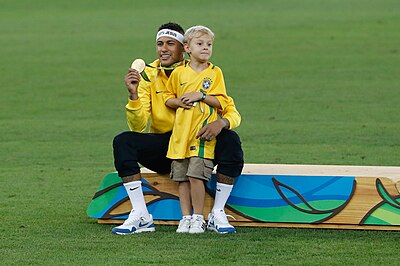

História de Neymar Jr
Conheça a história de vida de Neymar Jr, desde a infância até se tornar um jogador profissional de renome mundial.
Neymar da Silva Santos Júnior, nascido em Mogi das Cruzes, no dia 5 de fevereiro de 1992.É um jogador brasileiro que atua como atacante, atualmente jogando pelo Al-Hilal, da Arábia Saudita.Revelado pelo Santos em 2009, desde cedo correspondeu às expectativas e conquistou diversos títulos com o clube, incluindo dois Campeonatos Paulistas seguidos, uma Copa do Brasil e uma Libertadores, sendo esta a primeira do Peixe desde 1963. Ganhou por duas vezes seguidas o prêmio de melhor jogador sul-americano do ano, em 2011 e 2012, e um prêmio Puskás de gol mais bonito do ano em 2011. Em 2013, após ser protagonista no título da Copa das Confederações pela Seleção Brasileira, Neymar foi vendido ao Barcelona numa transação que é considerada a venda mais cara da história do futebol brasileiro. Na sua segunda temporada pelo clube espanhol, o jogador estrelou um brilhante trio de ataque conhecido como "MSN", ao lado dos também sul-americanos Lionel Messi e Luis Suárez. Juntos, faturaram a tríplice coroa e ajudaram o Barça a conquistar a La Liga, a Copa do Rei e Liga dos Campeões da UEFA, com Neymar sendo decisivo e terminando como um dos artilheiros da Champions. Além disso, o brasileiro consagrou-se como um dos melhores do mundo e foi finalista da Bola de Ouro da FIFA. Em 2017, com sua venda milionária ao Paris Saint-Germain por 222 milhões de euros, tornou-se a transferência mais cara da história do futebol. Nesse mesmo ano, foi pela segunda vez na carreira um dos três finalistas da premiação da FIFA de melhor jogador do mundo, desta vez nomeada The Best FIFA Football Awards. Na sua terceira temporada em Paris, Neymar ajudou o PSG a chegar a sua primeira final de Liga dos Campeões, em que perderam para o Bayern de Munique. O atacante é o jogador brasileiro com mais gols por essa competição desde 2018, quando superou Kaká. Pela Seleção Brasileira, Neymar estreou em 2010, aos 18 anos, e em 2023 superou Pelé para tornar-se o maior artilheiro da Amarelinha segundo a contagem da FIFA.[11] Principal nome do time que disputou a Copa do Mundo de 2014, o atacante marcou quatro gols em cinco partidas, mas sofreu uma grave lesão na coluna durante as quartas de final contra a Colômbia, o que o afastou da competição. No ano anterior havia conquistado o título da Copa das Confederações, sendo a principal estrela brasileira durante os cinco jogos da campanha, onde fez quatro gols e deu três assistências, tendo, inclusive, levado o prêmio de melhor jogador da competição e ainda a Chuteira de Bronze. Participou ainda das Copas do Mundo de 2018 e 2022, tendo marcado dois gols em ambas, mas sem conseguir impedir o Brasil de cair nas quartas de final. Também disputou três edições da Copa América, em 2011, 2015 e 2021, porém não conquistou a competição sul-americana. Em 2016, Neymar fez parte do elenco que ganhou o primeiro título olímpico da história da Canarinho, convertendo o pênalti que garantiu o título e saindo como herói. Fora de campo, o brasileiro é um dos atletas mais bem sucedidos do mundo; a SportsPro o nomeou como atleta mais comercializável do mundo em 2012 e 2013,[12] e a ESPN o citou como quarto atleta mais famoso do mundo em 2016.[13] No ano seguinte, Neymar foi incluído pela Time na lista das 100 pessoas mais influentes do mundo. Já em 2018, foi classificado pela France Football como terceiro jogador de futebol mais bem pago do mundo.[14] A Forbes o classificou como o terceiro atleta mais bem pago do mundo em 2019, e o quarto atleta mais bem pago em 2020. Durante nove anos, Neymar foi um dos principais endossadores da empresa estadunidense de roupas esportivas Nike,[15] até assinar com a alemã Puma em agosto de 2020.
Vida PessoalNo dia 8 de maio de 2011, horas antes da final do Campeonato Paulista daquele ano contra o Corinthians, Neymar foi informado que seria pai de um filho com uma garota de dezessete anos.[18] Quatro dias depois, em 12 de maio, a notícia tornou-se oficial através de seu site oficial, confirmando que o jogador seria pai pela primeira vez aos dezenove anos de idade.[20] O nome da mãe inicialmente não foi divulgado para que se pudesse preservar a imagem, tanto dela, quanto da criança. Dezesseis dias depois de ter o conhecimento da gravidez, na véspera da semifinal da Copa Libertadores, a mãe da criança informou-lhe que o bebê seria do sexo masculino.[18] Em 24 de agosto de 2011, às onze horas da manhã, ocorreu o nascimento de Davi Lucca, na cidade de São Paulo.[21] Apesar do nascimento do seu primeiro filho, Neymar jamais chegou a manter um relacionamento estável com Carolina Dantas, a mãe do bebê, que posteriormente teve seu nome divulgado para a mídia.[18] O jogador tem um acordo verbal com Carolina e paga trinta mil reais por mês de pensão, além de ter concedido uma cobertura de cinco dormitórios para que mãe e filho morassem.[22] Entre 2008 e 2009, Neymar e sua família moraram neste mesmo apartamento, na época em que o atleta iniciava sua carreira profissional no Santos.[22] Em 11 de fevereiro de 2013, Neymar assumiu publicamente um relacionamento com a atriz Bruna Marquezine, da TV Globo.[23] Ainda que os dois tenham sido vistos desde outubro do ano anterior, eles negaram diversas vezes indícios de relacionamento, dizendo serem apenas "bons amigos". No entanto, durante o Desfile das Escolas de Samba do Rio de Janeiro, no Sambódromo da Marquês de Sapucaí, os dois confirmaram que já estavam juntos há um mês.[23] Passado exato um ano, no dia 11 de fevereiro de 2014, a assessoria da atriz confirmou o fim do relacionamento com Neymar.[24] Várias especulações afirmaram que Neymar teria iniciado relacionamento com outras mulheres, mas nenhuma dessas foram confirmadas publicamente.[25][26] Em 22 de junho de 2017, Neymar confirmou fim de namoro com Marquezine, após aparecer sozinho em evento em prol do Instituto Neymar sem a aliança e com novo penteado. O jogador ainda esclareceu que rompeu o namoro com Marquezine de maneira amigável e deixou uma esperança aos fãs sobre uma possível reconciliação.[27] No final de dezembro de 2017, Neymar foi visto novamente com Marquezine; após os boatos, o próprio jogador postou nas redes sociais uma declaração, afirmando, que havia voltado o namoro com a atriz.[28] O casal foi visto junto pela última vez no dia 3 de outubro de 2018, antes do anúncio do término do relacionamento. A decisão teria sido tomada pelo jogador como uma junção de fatores, sendo o principal a tristeza causada pelo relacionamento à distância e a negativa de Bruna de se mudar para Paris.[29] Em abril de 2022, Neymar iniciou um relacionamento com a modelo Bruna Biancardi, terminando amigavelmente em agosto.[30] No entanto, eles reataram o namoro em janeiro de 2023.[31] Já no dia 18 de abril, o casal anunciou que esperava o primeiro filho.[32] Em junho, o jornal Metrópoles divulgou um vídeo que afirmando que Neymar teria traído Bruna com a coach Fernanda Campos, na véspera do dia dos namorados; dias depois o jogador se pronunciou confirmando e pedindo desculpas a namorada.[33] Sua filha Mavie, fruto do relacionamento com Bruna Biancardi, nasceu em São Paulo no dia 6 de outubro.[34] No dia 3 de julho de 2024 nasceu Helena, em São Paulo, filha de Neymar com a modelo Amanda Kimberlly.[35]
